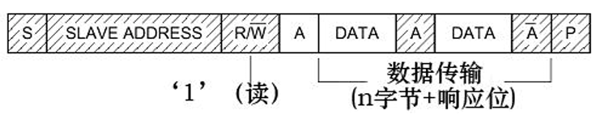

学习笔记 01
在STM32微控制器中，I2C(Inter-Integrated Circuit)是一个常用的串行通信接口，主要用于在多个设备之间进行数据交换。I2C 是一种支持主从模式的双向总线协议，适合短距离设备间的通信。下面分别说明主要的两种模式。
此图表示的是主机和从机通讯时，SDA线的数据包序列。其中S表示由主机的I2C接口产生的传输起始信号(S)，这时连接到I2C总线上的所有从机都会接收到这个信号。若配置的方向传输位为“读数据”方向，广播完地址，接收到应答信号后，从机开始向主机返回数据(DATA)，数据包大小也为8位，从机每发送完一个数据，都会等待主机的应答信号(ACK)，重复这个过程，可以返回N个数据，这个N也没有大小限制。当主机希望停止接收数据时，就向从机返回一个非应答信号(NACK)，则从机自动停止数据传输。
学习HTML、CSS 和 JavaScript 是前端开发的基础，可以说是每个初学者收到的第一份礼物。通过对这三者的深入学习，我对它们之间的关联有了深刻的理解。HTML 构建了网页的框架，CSS 负责为 HTML 添加美观的装饰，而 JavaScript 则为用户带来更加流畅和互动的体验，使网页更加生动和引人入胜。下面简单总结三者主要内容
HTML
- 标签与元素：学习如何使用各种标签构建网页的结构，如标题 <h1>~<h6>、段落 <p>、图片 <img>、超链接 <a> 和表格 <table> 等。
- 列表：掌握无序列表 <ul> 和有序列表 <ol> 的使用，用于创建项目清单、导航菜单等。
- 表单：学习表单元素（如 <form>, <input>, <button>,）用于用户数据输入和提交的基本操作。
- 多媒体元素：使用 <audio>和 <video> 标签嵌入音频和视频内容。
CSS
- 基础选择器：掌握选择器的基本用法，包括元素选择器（如 div）、类选择器（如 .class）、ID选择器（如 #id）、属性选择器以及组合选择器。
- 盒模型：理解盒模型的概念，包括 margin, border, padding, content，以及这些属性如何影响元素的大小和布局。
- 布局模型：浮动布局 (float)，弹性盒布局 (flexbox)，网格布局(grid)。
- 定位：学习元素的不同定位方式，如 static, relative, absolute, fixed, sticky，以及它们如何影响元素在页面中的位置。
- 文本与字体样式：使用 font-family, font-size, font-weight, text-align 等属性设置字体样式、文本颜色和对齐方式。
- 媒体查询：根据不同的屏幕尺寸调整网页布局，确保页面在手机、平板、桌面等设备上都能很好显示。
- 伪类与伪元素：使用 :hover, :focus, :nth-child 等伪类控制元素的不同状态，使用 ::before, ::after 添加装饰性内容。
JavaScript
- 基本语法：变量声明，数据类型，条件语句，循环，函数。
- DOM操作：选择元素（如 document.getElementById()），修改内容（如 innerHTML），修改样式，创建与删除元素（如 createElement()）。
- 事件处理：使用addEventListener()监听用户操作，如点击、鼠标悬停、键盘输入等。
- 异步操作：使用setTimeout()，setInterval()实现延迟执行和定时任务。
总结
学习HTML、CSS和JavaScript是前端开发的基础。这个过程需要循序渐进，扎实掌握每个知识点，切忌急于求成。掌握这些基本技能后，制作一个合格的网页将变得游刃有余。在此基础上，前端进阶的学习可以转向各种框架，如 Vue，以提升开发效率和能力。